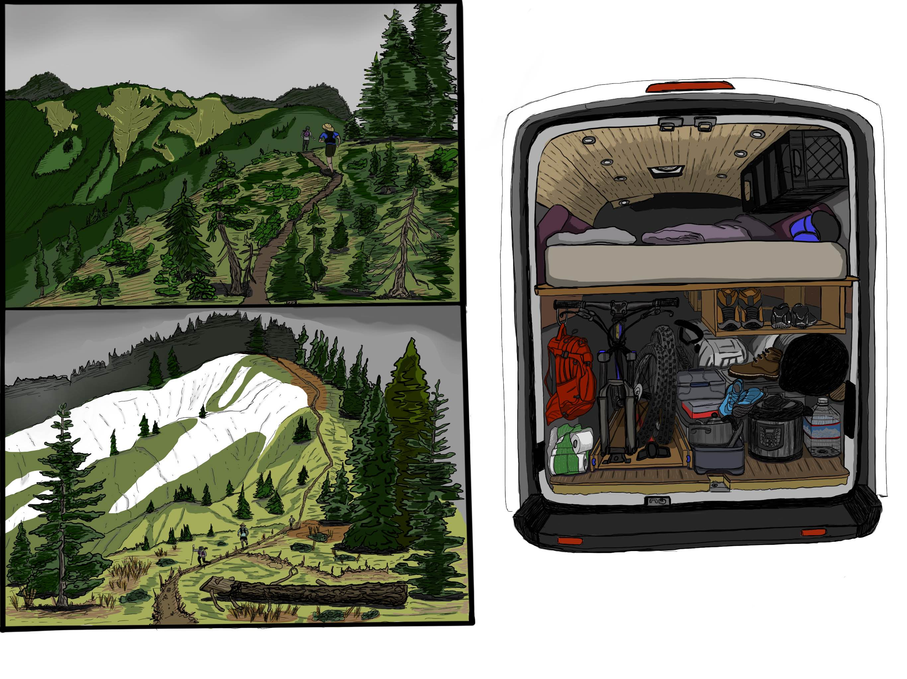

url <- "https://imgur.com/cprGoMX"
knitr::include_graphics(url)

We have gotten a few questions lately regarding the details of our van build so I decided to write them up.
Our van is named Notorious SBG after my late wife Dr. Sharon Beth Gray whose adventurous spirit lives on in our hearts, minds, and the van’s power-steering. :). NSBG is a 2015 Ford Transit 250 Hightop with a 148 wheel base purchased with 16000 miles in early 2017 for 25k cash + ~4k in build out. The current bluebook value of the van (without the build out), is $30-34k so not an investment by any means, but it has maintained value over time with the recent vehicle shortages. This model is the largest that will fit in a standard parking spot. They also make extra long ones, but that would much more of a pain. We did the build (continue to do, ha!) ourselves. It was quite a challenge trying to build something in an apartment parking lot in the East Bay while also watching the tools at all times. Fortunately, I lived within walking distance from a hardware store and from a West Marine (all of our electrical components).
We chose this model because it is basically a larger version of the Ford F150 truck. Same chassis and engine. While I am pretty handy, if we did need to get work done, many mechanics can work on this type of engine and parts are more abundant (also considered diesel).
The bed platform is just shy of 77 inches in length and the height inside the current build is also 77 inches. We fit a queen sized mattress in there. Rearranging some long pillows and our large duffel bags, you can make a number of comfortable seating arrangements on the bed.
There are trade-offs for everything of course and we actually rebuilt the main living area a few times based on needs. We keep it pretty minimalist and flexible (e.g. we are not going to put a ton of time into building cabinets when milk crates are way more flexible and can be taken inside our house once the trip is over).
The one thing we wish we did have is AWD or 4WD. So far we have gotten along without it, but only through planning and also owning a 2011 Subaru. Snow tires solve a lot of the issues, but not on sand or gravel bars (we spend time on these frequently fishing).
The largest upgrades that are worth buying outright if you will be living in/out of a van is swivel chairs for captain and copilot seat (see image) and a magnetic bug net for the slider and back doors that is custom to your specific model. Roll these down and it instantly turns your van into a large screened-in porch. We had a bunch of netting that we would use (also with magnets), but it was always a gigantic hassle to set up and only about an 80% solution for keeping insects out.
Below are some images of the current van build for reference.
url <- "https://imgur.com/cprGoMX"
knitr::include_graphics(url)
Left: Current view inside of the van. I was doing some work in there recently so we temporarily removed the mattress.
Middle: Swivel chairs increase the usable space inside by ~20%. You can also nap with these fully reclined and sleep a few additional people if you had to.
Right: Van with bed/mattress above the garage. This photo is taken after we packed before going to a friend’s desert festival in the Southern Sierra. Bikes, adventure gear, lots of books, shared activities, pickles etc. Normal trips would be less packed. The top right of the garage is a collapsible table. That space is perfectly designed to fit our backcountry ski bag and our XC ski bag.
